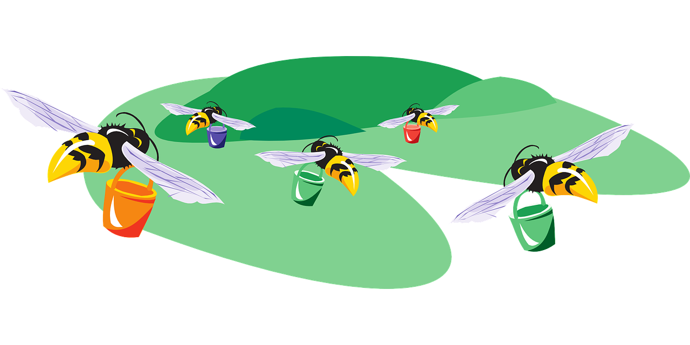

Chapter 4 Group Exercises

In this group exercise, you will generate random samples from normal distributions. You will then pretend the samples had been handed to you, and explore the samples visually to examine whether the normality assumption seems appropriate for the sample at hand. You might find this exercise helpful in the preparation for later parts of the course, where you will be given a sample or dataset and asked to check if the normality assumption is appropriate for some variable, before performing tests that assume an underlying normal distribution.
In R, you can generate random values from several probability distributions. For example, you can use the functions rbinom() and rpois() to obtain random values from the binomial and Poisson distributions, respectively. Similarly, you can obtain random values from a normal distribution using the function rnorm().
Note: the function rnorm() returns random values from the specified probability distribution, so your results of the following simulation study will vary every time you run the code. The questions for this exercise are based on a seed of 1 (setting a seed allows for reproducibility of results obtained from random functions), which is done via the command set.seed(1), which you should run before each random function in this exercise to ensure you can get to the correct answers.
For example, in the code below you will see that the results differ if you do not set a seed but that repeated trials lead to the same result if you use the same seed:
## [1] 2.373546 3.183643 2.164371 4.595281 3.329508## [1] 2.179532 3.487429 3.738325 3.575781 2.694612## [1] 2.373546 3.183643 2.164371 4.595281 3.3295084.1 Checking the normality assumption
1. Generate 30 values from a normal distribution with mean \(\mu=10\) and variance \(\sigma^{2}=4\). Then, create a boxplot for your sample. Remember to set a seed of 1 before running the function.
2. Imagine you were handed the sample without being told that it was generated from a normal distribution. Based on the boxplot, would you say that the sample approximately follows a normal distribution?
3. Next, create a histogram to get a better idea of the shape of the distribution. You might have to change the binwidth to get a better plot.
4. Based on the histogram, would you say that the sample approximately follows a normal distribution?
4.2 Swizzels box
Let's move away from the Normal and work a bit with the Binomial distribution.
Imagine your Lab taker has a Swizzels Party Mix box, containing 8 different sweets. Your favourites are blue refreshers. The box is passed around and everyone picks a sweet at random and puts it back in the box.
Knowing that all the different types have the same probability of being picked, and that there are 82 students, answer the following questions:
1. What is the probability that out of the 82 students, half of them get a blue refreshers?
2. What is the probability that between 5 and 9 students get strawberry lollipops (5 and 9 included)?
3. Could you approximate this binomial distribution with a Normal distribution?